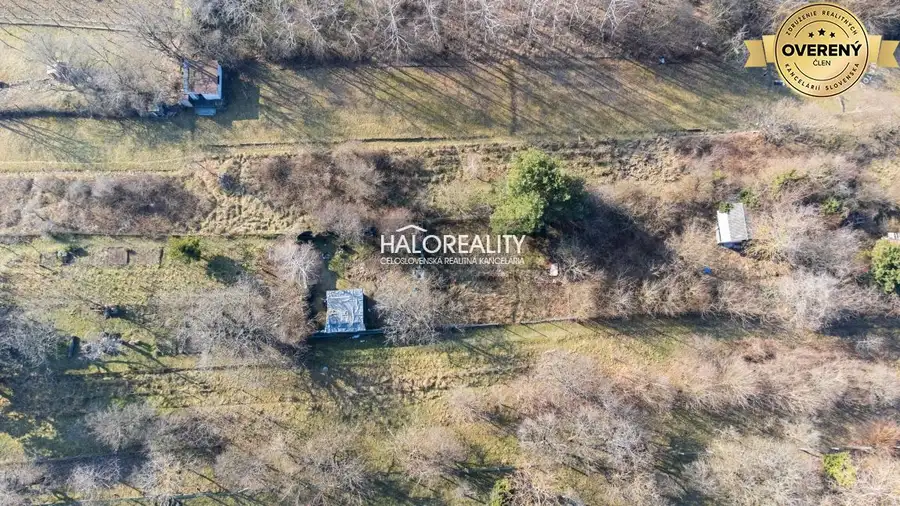
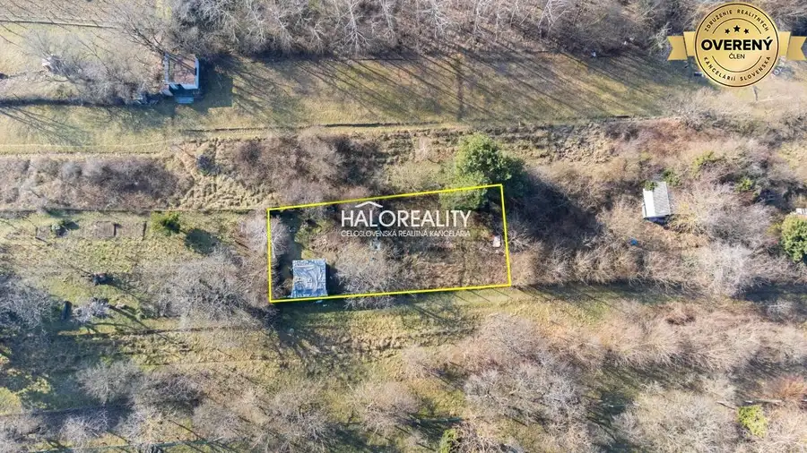
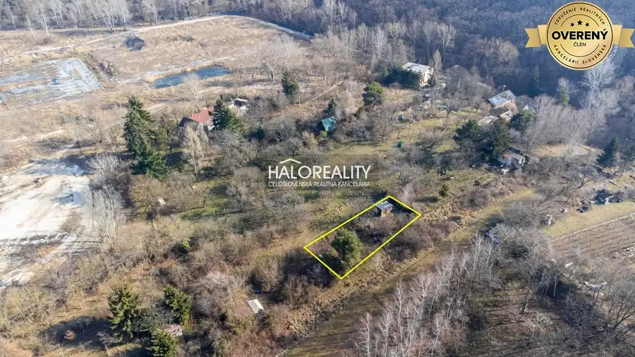
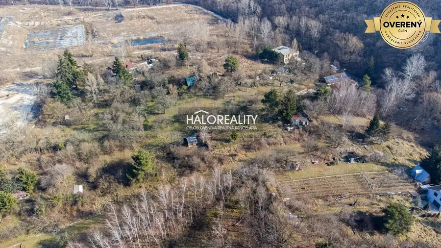

Predaj · Pozemok
Predaj, pozemok 483 m2 Bratislava Lamač - EXKLUZÍV...
Lamač, BA
116 556 €241 € za m²





- Plocha483 m²
- Vlastníctvoosobné
- Energetická triedaG
O nehnuteľnosti
Ponúkame na predaj investičný pozemok v Lamači (483 m2)
Lokalita a okolie:
1.1 Lamač – pokojná, atraktívna mestská časť Bratislavy
1.2 Rýchla dostupnosť do centra mesta aj na diaľnicu D2
1.3 Blízkosť prírody – Malé Karpaty, turistické a cyklistické trasy
1.4 Kompletná občianska vybavenosť v dosahu
1.5 Tichá rezidenčná lokalita s rastúcim dopytom po nehnuteľnostiach
Parametre pozemku:
2.1 Rozloha: ...
Viac info na našom webe .
Parametre
- Rozloha pozemku
- 483 m²
- Poschodie
- neuvedené
- Vlastníctvo
- osobné
- Status
- aktívne
- Balkón
- nie
- Lódžia
- nie
- Garáž
- nie
- Výťah
- nie
- Klimatizácia
- nie
- Energetický certifikát
- G
- Dátum zverejnenia
- 2025-03-03
Kde to je
Ďalšie ponuky
Celá ponuka